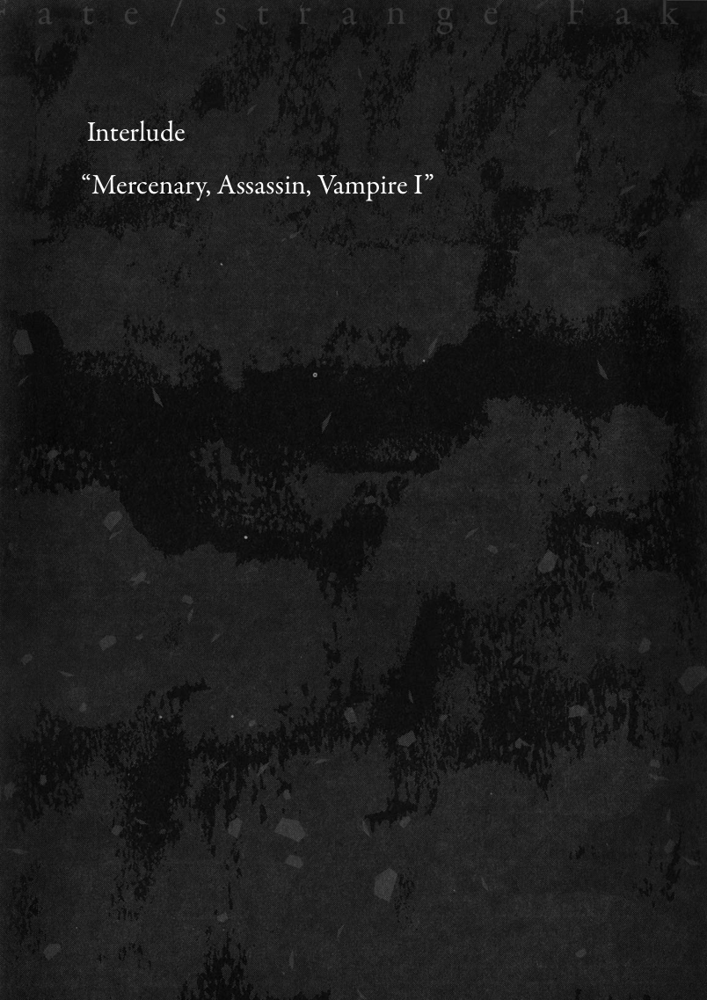

"...Todos eles são imprudentes demais."
O rosto de Sigma não mostrava emoção alguma, mas havia um leve tom de exasperação em sua voz.
Ele era um jovem mercenário usuário de magia do lado dos "mentores" da Guerra do Santo Graal. Originalmente, deveria ter se tornado o Mestre de Lancer, mas acabara assombrado por um Espírito Heroico da enigmática Classe "Watcher" e formara, à sua maneira, uma aliança temporária com Saber e Assassin para aumentar as próprias chances de sobrevivência.
Ele viera observar o Servo que firmara contrato com a garota em coma no hospital, assim como as outras facções inimigas que a tinham como alvo, com base nas informações fornecidas pelas sombras de Watcher. Repassara a Saber e Assassin o que aprendera com seu Servo sob o pretexto de que eram "dados vindos dos seus superiores".
Um misterioso Espírito Heroico que supostamente tinha uma visão panorâmica de tudo o que acontecia na cidade.
Sigma fora arrastado para a Guerra do Santo Graal sem que lhe explicassem as características da Classe Watcher e sem ter um objetivo claro próprio. Antes disso, todos ao seu redor o tratavam apenas como "soldado A". Francesca, que o trouxera para a Guerra do Graal, queria que ele continuasse sendo "soldado A", então não havia nada de surpreendente nisso. O Espírito Heroico que, porém, firmara contrato com Sigma estava no processo de transformá-lo em algo especial dentro da "Guerra do Santo Graal Falsa".
Ainda assim, a capacidade de combate de Sigma não se comparava à de um Espírito Heroico. Embora tivesse acumulado experiência como mercenário usuário de magia em campos de batalha do mundo inteiro, é claro que jamais havia enfrentado um familiar extraordinário como um Servo. Bastava olhar para os ataques do Espírito Heroico dourado para perceber o quão deslocado ele estava ali.
"Aquele é Gilgamesh, o Rei dos Heróis. Um dos heróis mais antigos", disse um garoto com um cajado em forma de serpente, uma das "sombras".
Eles eram os terminais de "Watcher", um sistema para transmitir informações ao seu Mestre. Era possível que estivessem ligados diretamente ao cérebro de Sigma, porque ninguém além dele conseguia vê-los ou ouvi-los.
Sigma achava que seria mais fácil se tudo aquilo não passasse de alucinações suas, mas as informações que lhe davam eram precisas e, como incluíam coisas que ele não tinha como saber, não lhe restava senão admitir que eram de fato um poder genuíno de um Espírito Heroico.
"Falando francamente, você não tem a menor chance agora."
Obviamente, Sigma concordou em pensamento com a "sombra", que já havia mudado da forma de um garoto com cajado de serpente para a de um jovem com asas mecânicas nas costas. Bastava um olhar para saber que aquelas armas que o Espírito Heroico disparava do vazio não eram comuns.
Aquilo não era um oponente que ele pudesse enfrentar com magia ou armas de fogo modernas. Talvez conseguisse distraí-lo por um instante com uma granada de luz ou de atordoamento, mas duvidava que isso trouxesse qualquer vantagem diante do Espírito Heroico chamado Gilgamesh.
Seria diferente se ao menos pudesse coordenar-se perfeitamente com Saber, mas eles haviam acabado de se conhecer, e a Mestre de Saber, Ayaka Sajou, afirmava não ser uma Mestre de verdade nem mesmo uma maga.
Sendo assim, só havia uma pessoa que talvez pudesse contribuir para o combate naquela situação. Ela era um Espírito Heroico como Saber e Gilgamesh, a garota Assassin que estava ao lado dele.
"O que você vai fazer?"
Ele não tinha um plano definido. Ainda assim, se continuasse simplesmente parado, sem atacar nem recuar, apenas afundaria ainda mais naquele lamaçal brutal.
Nesse caso, julgou ele, sua melhor opção seria agir conforme as cartas nas mãos das pessoas à sua volta.
"Vou proteger a criança", respondeu ela em voz baixa. "Você sabe onde fica o quarto dela?"
"Você vai mesmo...? Provavelmente vai acabar dando de cara com aquele Archer transformado em demônio ou com aquela gatling dourada."
"...Não vou pela frente. Odeio admitir, mas, imatura como sou, literalmente precisaria empregar tudo o que tenho para executá-los. Mesmo assim, não tenho certeza de que conseguiria levar isso até o fim. Se fosse apenas comigo, não importaria, mas nosso objetivo é salvar uma criança."
"Esse é o objetivo daqueles policiais, não o seu."
"?"
Assassin olhou para Sigma, confusa, como se não entendesse sua intenção.
Sigma falou com a frieza de sempre.
"Você nunca conheceu essa criança e a probabilidade de ela se tornar sua inimiga ou sua aliada é baixa. Na verdade, se o Espírito Heroico ligado ao seu alvo for hostil, você acabará entrando em confronto direto com um Espírito Heroico contra o qual nem precisava lutar. Logicamente, isso não te favorece."
"...Eu havia me esquecido de que você vive sem fé."
Assassin assentiu como se isso explicasse tudo, olhou diretamente para Sigma e disse:
"Há um benefício. Uma razão lógica."
"Que razão...?"
Nem o próprio Sigma sabia por que perguntara. Provavelmente era apenas porque não conseguia compreender de todo o que levaria Assassin a se envolver de bom grado numa situação tão problemática.
Assassin respondeu sem hesitar. "Se isso servir para salvar uma criança em pleno crescimento, não pode haver benefício maior."
Enquanto falava, ela se pôs em movimento sem fazer ruído. Começou a contornar o hospital, abrindo caminho pelas brechas do campo de batalha em que a rua havia se transformado. Sigma a seguiu.
"...?
Não entendo", perguntou ele, meio para si mesmo. "Criança ou não, ela continua sendo uma estranha. Você nem sabe se segue a mesma fé que a sua."
Se ela estivesse fazendo isso para conquistar mais fiéis, ele poderia entender. Mas realmente valia a pena arriscar a vida por aquela criança?
"Eu ainda sou imatura. Em termos corretos, os verdadeiramente fiéis não pensam em benefícios. Só por viverem, ouvem uma grande voz com a mesma naturalidade com que respiram e escolhem esse caminho."
"...Eu não entendo muito bem a moral comum... mas você não está tentando salvar uma criança nesta situação justamente porque a sua fé é profunda?"
As palavras de Sigma fizeram a fanática plenamente amadurecida voltar-se para ele por um instante. Seus olhos estavam cheios de raiva de si mesma e de uma tristeza profunda.
"Não fui capaz de abandonar minha ira contra os infiéis. Não fui capaz de ter tolerância. Enquanto o meu curso atual estiver misturado ao meu desejo de salvar outros, ele não passa de um desdém orgulhoso pelo destino. Por causa dessa imaturidade, não me foi permitido trilhar o caminho até o recinto da montanha."
"..."
Eles atravessaram a Rua Principal furtivamente e se aproximaram do hospital. A força policial e o arqueiro já haviam começado a lutar, e o outro Archer, Gilgamesh, e Saber também estavam em combate. Assassin talvez sobrevivesse caso fosse atingida por algum projétil perdido, mas Sigma certamente não. Ele usou magia para abafar sons e fortalecer o corpo, e seguiu logo atrás de Assassin, avançando com cautela enquanto mantinha os dois combates sob vigilância.
Assassin continuou falando com Sigma num tom impassível.
"Mas isso não importa. Minha imaturidade não é motivo para eu deixar de salvar uma criança."
"...Entendo." Então, pensando na palavra "criança", Sigma baixou um pouco o olhar e murmurou, sem querer:
"...Ninguém salvou a nós."
Por um instante, Assassin, que se aproximava dos fundos do hospital, congelou no lugar.
Sigma percebeu que deixara escapar algo que não devia e desviou os olhos de Assassin, inexpressivo. No instante seguinte, a voz de uma das sombras, o velho que dissera "me chame de capitão", soou atrás dele.
"Desta vez você enfiou o pé na boca, garoto... É idiota? O que estava pensando, choramingando que 'ninguém te salvou' para alguém que está tentando salvar outra pessoa? Está com inveja daquela pirralha dormindo no hospital? Vai ficar feliz se atrasar a garota com essas baboseiras e fizer aquela criança acabar tão ferrada quanto você?"
Sigma não tentou rebater a voz sarcástica.
Em parte porque responder a uma voz que só ele podia ouvir faria Assassin desconfiar dele. Em parte porque não havia nada que ele pudesse dizer para contestá-la.
Sigma não tinha um desejo forte pelo Graal, nem uma razão para sobreviver. Era um mercenário que continuara lutando e chegara até ali guiado apenas por uma sensação vaga de que "não queria morrer".
E, já que essa atitude o mantivera vivo até ali, talvez até fosse um de seus pontos fortes... mas certamente não era algo de que pudesse se orgulhar.
As palavras de Assassin lhe trouxeram de volta a infância, lembraram-lhe de como a pessoa sentada ao seu lado podia ser uma "coisa" sem sangue a ser descartada até o cair da noite, e ele simplesmente deixou escapar aquilo por instinto.
Por quê?
Por que não houvera salvação para eles?
Por que a garota do hospital seria salva? O que a separava deles?
Antes, ele teria descartado tudo isso como "só azar". Então por que aquelas palavras tinham saído de sua boca agora? Sigma percebeu que seu ser estava ficando instável.
Isto não é uma boa tendência. Nem como usuário de magia, nem como mercenário.
Gente que se permitia vacilar morria. Ele já vira isso acontecer muitas vezes no curso do seu trabalho.
"Desculpe. Eu não devia ter dito isso..."
Sigma tentou recuperar a compostura encerrando a conversa, mas Assassin o interrompeu ao voltar-se para ele e dizer:
"Minha imaturidade me impediu de salvar você quando era criança."
"..."
"Eu não fui capaz de estar lá e salvá-lo. Isso é prova da minha imaturidade."
"Você é um Espírito Heroico", respondeu Sigma à declaração aparentemente absurda de Assassin. "Eu não sei quando você morreu, mas nós existimos em tempos e lugares diferentes. Você não poderia ter me encontrado quando eu era criança."
"Diferenças de tempo e de lugar são triviais. Prova disso é que você e eu estamos aqui agora, de pé no mesmo lugar."
Do ponto de vista de Sigma, aquelas palavras eram anormais. Ela afirmava com plena certeza que, se sua fé fosse perfeita, teria aparecido diante do Sigma criança e o salvado.
Se ele fosse feliz no presente, as palavras de Assassin talvez o irritassem.
Se, apesar de infeliz, tivesse escolhido o próprio caminho, talvez discutisse com ela.
Talvez dissesse: "Estou satisfeito. Ninguém jamais teve pena de mim por você nunca ter aparecido diante de mim."
Mas essa raiva não veio. O próprio Sigma meio que concordava com o que ela dizia.
Ah, então é isso.
Eu... queria que alguém me salvasse?
Se alguém tivesse nos salvado naquela época... as coisas teriam sido diferentes? Se eu tivesse sido salvo antes de Francesca e os outros destruírem o país... antes de todo mundo morrer... ou até antes disso... se minha mãe tivesse sido salva...?
Não, se minha mãe tivesse sido salva, eu nunca teria nascido.
Sigma baixou os olhos em silêncio ao se lembrar dos detalhes do próprio nascimento.
Se você salvasse todo mundo, eu não seria feliz nem infeliz, eu simplesmente não existiria...
"...É uma forma interessante de ver isso. Acho que já houve uma comédia assim."
Assassin pareceu confusa ao ouvi-lo falar sozinho.
Sigma respondeu à pergunta que ela fizera antes de começarem a se mover.
"...Daqui, o alvo da polícia, Kuruoka Tsubaki, está no quarto da extrema direita do último andar."
Assassin ouviu e assentiu em silêncio.
"Agradeço. Cuidarei do resto."
"Espere."
"?"
Sigma, ainda sem expressão, deteve Assassin. Depois de pensar por um momento, disse: "...Eu também vou. Não tenho certeza quanto a simplesmente protegê-la, mas pode haver um jeito de tirá-la dali sem permitir contágio."
Segundo as informações de Watcher, Kuruoka Tsubaki estava infectada com um "patógeno não transmitido pelo ar", mas nada garantia que isso continuaria assim.
Afinal, ela estava acompanhada de um Espírito Heroico desconhecido. Havia a possibilidade de ele agir sobre ela e alterar as características da bactéria. Por outro lado, se conseguissem trazer esse Espírito Heroico para o seu lado, ele seria um aliado poderoso e facilitaria o transporte de Tsubaki para um local seguro. Se então a polícia incapacitasse o Espírito Heroico como planejado, ele poderia apresentar um relatório satisfatório a Faldeus sem dificuldade. Essa era a ideia de Sigma.
"Não se esforce demais. Eu mesma a carregarei para fora se for preciso", disse Assassin a Sigma. Ao que parecia, ela não esperava que ele fosse acompanhá-la até o fim. O jovem de cabelos negros, porém, apenas balançou a cabeça em silêncio.
"Duvido que o corpo da garota suporte a forma como você se move. Ela está em coma há muito tempo; se você impuser um peso excessivo ao corpo dela, isso pode bastar para parar seu coração."
Quando eu era pequeno, um dos meus companheiros morreu assim.
Sem pôr essa lembrança em palavras, Sigma propôs uma estratégia.
"Provavelmente sou mais acostumado a lidar com macas do que você. Depois que tirarmos a garota de lá, eu falo com aquele arqueiro de aparência demoníaca. Se eu fizer isso, ele não deverá mirar no hospital."
Se conseguissem proteger Tsubaki, mas o hospital desabasse, seria um desastre.
"Oh, que interessante. Pelo bem de quem você acabou de propor esse plano?"
A sombra na forma do garoto com cajado de serpente lhe fez a pergunta, parecendo satisfeita por algum motivo.
Pelo bem de quem...?
"Isso não tem nada a ver com a sua missão. Você mesmo disse isso não faz muito tempo. Não há benefício algum. Então por que está tentando ajudá-la?"
A "sombra" parecia estar colocando-o à prova.
"...Ah, perdoe-me. Posso ser uma sombra, mas sou influenciado pela personalidade que tinha quando estava vivo. Eu provavelmente pareceria diferente se me manifestasse como um Espírito Heroico... Ainda assim, nós, sombras, temos comportamentos que se assemelham a vontades individuais. Considere isso uma piada deixada pelo resíduo gravado na sombra de uma sombra e deixe passar."
Foi o que disse o garoto de cajado de serpente, mas Sigma não conseguia simplesmente deixar aquilo para lá. Afinal, nem ele próprio sabia explicar por que decidira seguir junto.
Isto realmente não é uma boa tendência.
Por que não deixei isso com ela e recuei?
Perder de vista o rumo da própria mente é um defeito fatal, tanto para um mercenário quanto para um usuário de magia.
Sigma estava a ponto de anunciar que mudara de ideia e que, afinal, recuaria, quando...
"...Agradeço", disse Assassin, baixando os olhos. A voz dela parou o coração de Sigma.
"Você se esforça para fazer o bem. É muito mais digno de ser salvo do que eu, maculada como sou."
...
Se eu disser "na verdade, estou indo embora" agora, vou criar uma brecha fatal. Isso vai prejudicar tanto as chances de a missão ter êxito quanto as minhas chances de sobrevivência.
O pensamento atravessou a mente de Sigma. Sem lhe dar resposta, ele a seguiu em silêncio.
O som das batalhas ferozes entre Espíritos Heroicos ecoava pela noite.
Para se afastarem daquele clamor, eles contornaram o hospital pelos fundos. Depois de se certificarem de que não havia ninguém por perto, entraram no terreno do hospital.
Dentro do hospital de dez andares, os magos da polícia haviam tomado medidas para esvaziar a área e lançado um feitiço do sono sobre a ala dos pacientes internados.
Até mesmo as enfermeiras do turno da noite estavam dormindo por ora, e os internados já se encontravam em seu horário normal de sono. Como havia o risco de dano desnecessário caso a condição dos pacientes adormecidos se agravasse de repente, a magia fora configurada para permanecer em efeito pelo menor tempo possível.
Sigma, que recebera essa informação de Watcher, decidiu que por isso podia se permitir fazer um pouco de barulho e tentou seguir a rota mais curta a partir dos fundos do hospital. Avançou depressa pelo jardim dos fundos... mas, quando já havia percorrido cerca de metade do caminho, Assassin agarrou o colarinho do equipamento de Sigma e o puxou com força para o lado.
"?!"
Antes que pudesse perguntar o que ela pretendia fazer, algo desabou sobre o ponto onde Sigma estava parado.
Inúmeros pedaços de metal se cravaram no chão.
Eram armas tortuosas de morte, lanças formadas por incontáveis bisturis, tesouras e outros instrumentos cortantes semicondensados e fundidos uns aos outros.
Ao vê-los cair, Sigma deduziu que continham todos os bisturis, tesouras e serras de osso do hospital.
"Pois é, garoto. Ele passou esse tempinho todo reunindo objetos afiados do hospital inteiro", sorriu de lado a sombra em forma de capitão, a certa distância.
"Agora é hora da segunda prova. Supere-a e cresça, garoto."
Sigma o ignorou e olhou na direção de onde aquelas lanças pareciam ter vindo. E então...
Lá estava um homem, parado perpendicularmente à parede branca por volta do quinto andar do hospital. "...!"
Os Circuitos Mágicos de Sigma estremeceram. Em parte porque, ao seu lado, a Energia Mágica de Assassin se agitara violentamente. Mas, mais do que isso, porque a Energia Mágica contida naquela "coisa" que estava na parede, desafiando a gravidade, era profundamente inquietante. Ou talvez não fosse apenas sua percepção da Energia Mágica, mas também os instintos que desenvolvera depois de lutar por tanto tempo como mercenário usuário de magia.
Aquela "coisa" é perigosa.
As sombras me disseram que havia um hematófago, mas aquela "coisa" está num patamar alto até entre os da espécie dele. Não é um dos mais altos, mas está muito acima de um monstro comum.
Não é algo que um humano devesse enfrentar.
Ele só lutara contra uma criatura parecida uma única vez antes. Naquela ocasião, mal conseguira derrubá-la trabalhando ao lado de outros magos e usuários de magia conhecidos... mas o instinto de sobrevivência que construíra como usuário de magia o alertava de que a "coisa" à sua frente era mais perigosa do que a que ele havia derrotado.
Por um momento, Sigma congelou, oprimido não pelo medo, mas pela Energia Mágica. Então a "coisa" falou com ele.
"...Você fez a escolha certa, garoto."
"...?"
"Se agora há pouco", continuou a "coisa", batendo palmas devagar diante do desconfiado Sigma, "você tivesse tentado abandonar minha querida garota e recuar sozinho, eu teria arrancado seu coração, moído na terra e espalhado pelo cocho de um chiqueiro."
Rebaixando chiqueiros por puro capricho, o homem desceu ao chão com um largo sorriso. Depois de fazer uma reverência cortês, a "coisa" realizou o truque de sorrir em êxtase com a boca enquanto encarava Sigma com olhos cheios de fúria e disse:
"Você também fez a pior escolha possível, garoto."
Era uma declaração absurda, contradizendo a anterior. "É absolutamente imperdoável que um humaninho insignificante tente caminhar ao lado da minha querida. Não tolerarei que minha adorável Assassin sequer converse com alguém como você."
A "coisa" estalou o pescoço, abriu os braços e proclamou seu ressentimento feroz com um sorriso perverso.
"Vou fazer você incapaz de morrer e depois sugar seus Circuitos Mágicos um por um. Vou esmagar seus olhos, quebrar todos os ossos do seu corpo, arrancar sua pele, violar seu cérebro, estuprar seu coração, reduzir seus pulmões a pasta e picar suas tripas em carne moída. Ah! Ah! Já sei! Vou rasgar seu corpo em milhões e bilhões de pedaços enquanto você ainda estiver vivo e espalhar tudo pelo cocho de um galinheiro!"
Sua voz foi crescendo cada vez mais enquanto ele arqueava as costas e fitava o céu, que refletia o brilho dos Fantasmas Nobres do Espírito Heroico dourado... então abriu um sorriso de êxtase e virou a cabeça para encarar Assassin.
"Fico imaginando que rosto você fará quando isso acontecer com alguém a quem abriu o coração, nem que seja só um pouquinho. Ah... Oh... Maravilhoso! Você realmente é maravilhosa! Só de imaginar você maculada pelas próprias lágrimas já basta para me fazer chorar!"
A "coisa", o Apóstolo Morto que se autodenominava Jester, de fato derramava lágrimas de alegria enquanto falava. Assassin, observando-o, já havia partido para a ação.
Sufocando suas emoções, mas despejando na própria Energia Mágica toda a indignação que viera acumulando até então, ela saltou sobre o monstro que era seu Mestre.
No lugar da Energia Mágica do demônio, ela agora tinha o suprimento temporário que Saber lhe emprestara. Despejou a maior parte dele em seu Fantasma Nobre.
"...Reveste-me de agudeza negra..."
"Espíritos Patrulheiros Impassíveis: Zabaniya."